Estabilidade
Camilla e João
Linearização e estabilidade
Parte 2 — João
Estabilidade — o que vamos responder
Partindo da equação não linear da massa, queremos decidir o que a professora pediu:
A pergunta central
Reescrever a EDO como um sistema homogêneo, achar os autovalores
e verificar se a parte não linear pode ser ajustada/eliminada sem mudar o comportamento perto do equilíbrio.
- Da EDO de 2ª ordem para um sistema de 1ª ordem e seus equilíbrios.
- Separar parte linear × parte não linear e montar o sistema homogêneo.
- Autovalores, retrato de fase (centro) e por que a linearização sozinha não basta.
- Energia para decidir a estabilidade do sistema não linear — e o caso degenerado
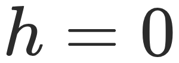
.
Camilla e João
Linearização e estabilidade
Parte 2 — João
Estabilidade — Da 2ª ordem para um sistema
Retomamos a força restauradora obtida pela Camilla (com
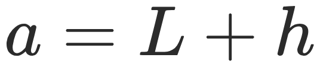
):
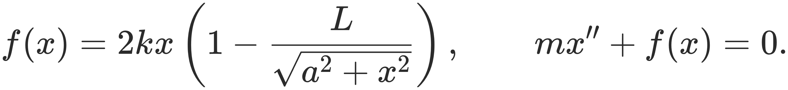
Definindo as variáveis de estado
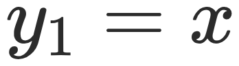
e
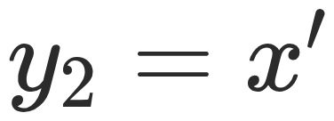
, a equação de 2ª ordem vira um sistema de 1ª ordem:
Toda a análise de estabilidade será feita neste plano de estados
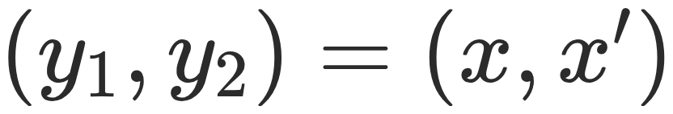
, o
plano de fases.
Camilla e João
Linearização e estabilidade
Parte 2 — João
Estabilidade — Pontos de equilíbrio
No equilíbrio nada varia:
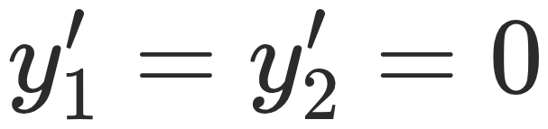
. Logo precisamos de
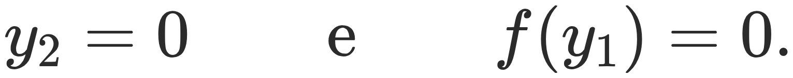
Como
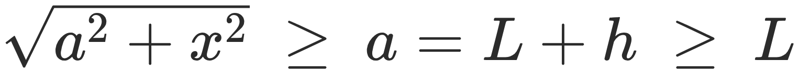
, a fração
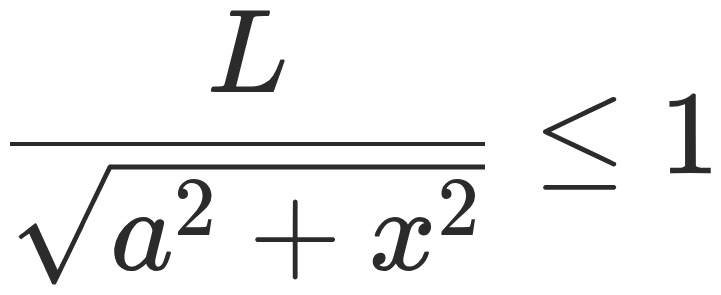
, com igualdade somente quando
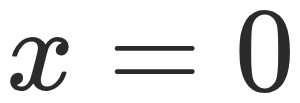
e ao mesmo tempo. Portanto
É o estado de repouso na posição central — exatamente o ponto em torno do qual a Camilla linearizou.
Camilla e João
Linearização e estabilidade
Parte 2 — João
Estabilidade — Parte linear × parte não linear
Escrevemos
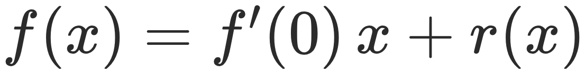
. Pela série binomial de
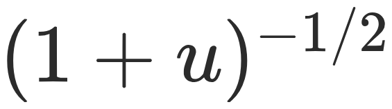
com
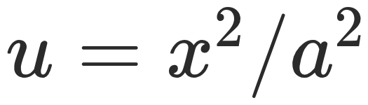
:
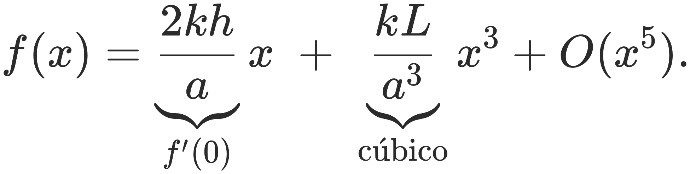
Os coeficientes batem com os da Camilla (slide 16). Não há termo em
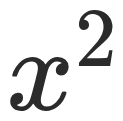
porque é ímpar, então
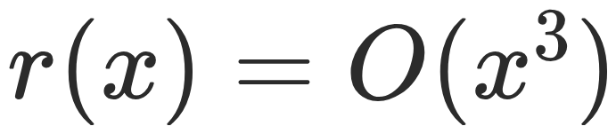
.
Com
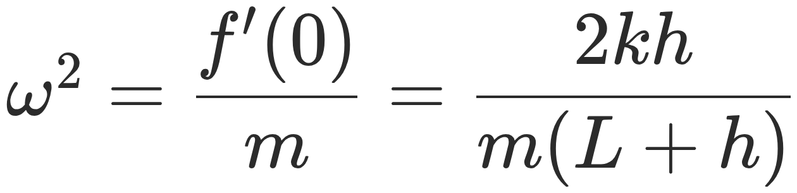
, o sistema fica
parte linear + parte não linear:
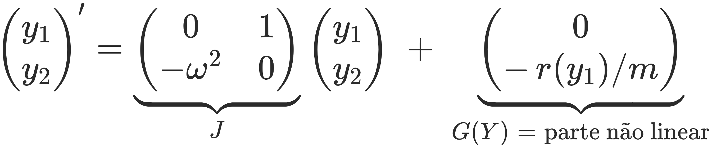
Camilla e João
Linearização e estabilidade
Parte 2 — João
Estabilidade — O sistema homogêneo
Como , perto da origem a parte não linear é desprezível frente à linear:
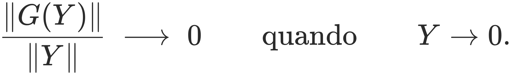
Essa é a “parte não linear” da professora. Ao retirá-la, sobra o sistema linear homogêneo:
É homogêneo (lado direito só depende de
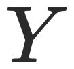
, sem termo independente) e de coeficientes constantes — pronto para o método dos autovalores.
Camilla e João
Linearização e estabilidade
Parte 2 — João
Estabilidade — Autovalores (h > 0)
Procuramos
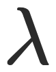
tais que
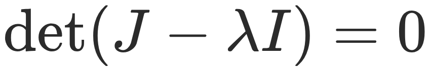
:
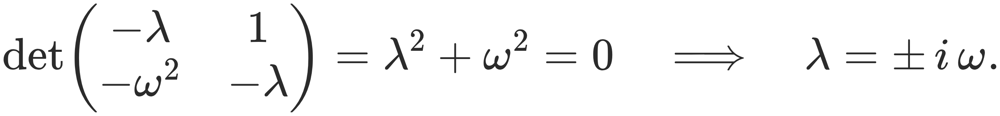
Autovalores imaginários puros
Para , o autovetor é
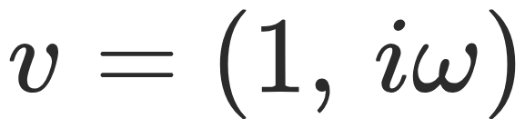
, pois
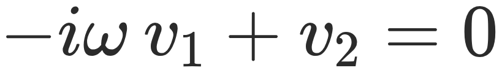
. Tomando parte real e imaginária de
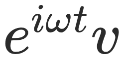
, obtemos a solução real no próximo slide.
Camilla e João
Linearização e estabilidade
Parte 2 — João
Estabilidade — Solução e retrato de fase: centro
A solução geral do sistema homogêneo é
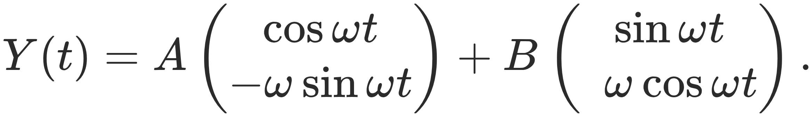
Wronskiano
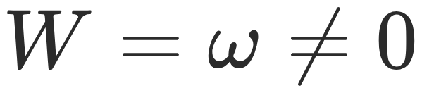
: soluções fundamentais (reproduz o slide 14 da Camilla).
As órbitas satisfazem
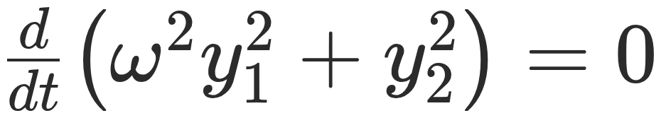
, ou seja, são
elipses fechadas.
Classificação

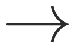
equilíbrio é um
centro: estável, mas
não assintoticamente estável.
Camilla e João
Linearização e estabilidade
Parte 2 — João
Estabilidade — A linearização sozinha basta?
O teorema da linearização (Hartman–Grobman) só garante que o retrato de fase não linear
se parece com o linear quando o equilíbrio é hiperbólico, isto é,
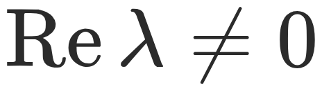
.
Nosso caso é delicado
Aqui
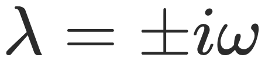
tem
equilíbrio
não hiperbólico. O teorema
não se aplica: a linearização, por si só,
não decide a estabilidade.
Por quê a cautela? Porque a parte não linear
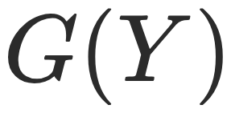
, por menor que seja, pode transformar
um centro em espiral. Vejamos o exemplo clássico no próximo slide.
Camilla e João
Linearização e estabilidade
Parte 2 — João
Estabilidade — Por que o centro pode mentir: o termo α
Considere o sistema com a mesma parte linear do nosso (um centro) mais uma pequena perturbação cúbica controlada por :
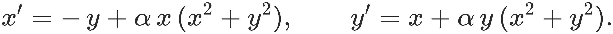
A parte linear tem autovalores
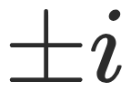
(centro), igual ao nosso. Mas passando para coordenadas polares
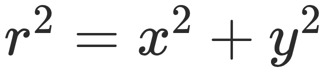
:
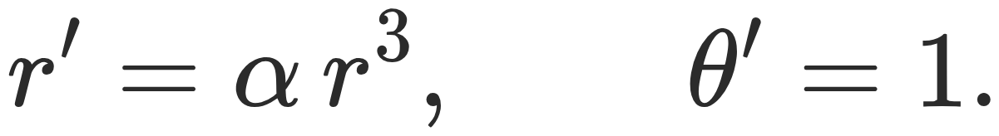
α < 0
decresce espiral estável (atrai).
α > 0
cresce espiral instável (repele).
Moral: com , três comportamentos opostos têm a mesma linearização. Por isso precisamos de outra ferramenta: a energia.
Camilla e João
Linearização e estabilidade
Parte 2 — João
Estabilidade — Energia decide (h > 0)
Definimos o potencial e a energia total:
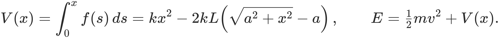
Ao longo das soluções, é conservada:
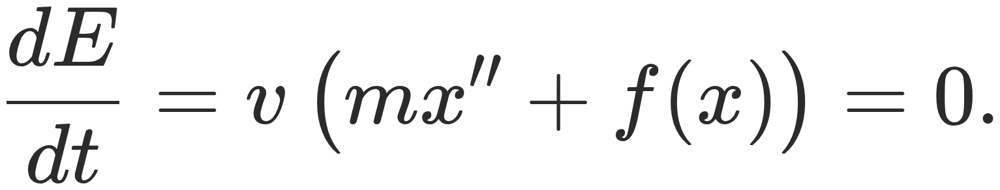
Como
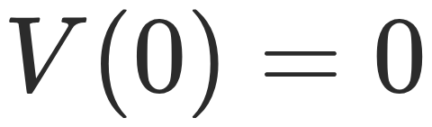
,
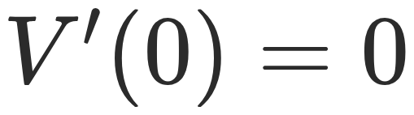
e
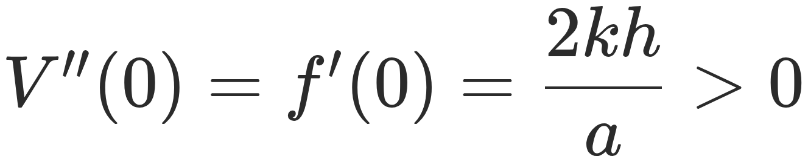
(para
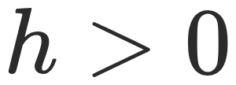
),
o potencial tem
mínimo estrito na origem é definida positiva.
Conclusão (h > 0)
é uma função de Lyapunov conservada: as curvas são fechadas o sistema não linear também é um centro (estável, soluções periódicas).
Camilla e João
Linearização e estabilidade
Parte 2 — João
Estabilidade — Linear × não linear: dá para eliminar?

Esquerda: elipses do sistema homogêneo. Direita: órbitas do sistema não linear (
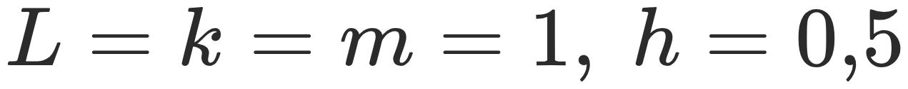
).
Para os dois quadros são qualitativamente iguais (centro, órbitas fechadas). O que se perde ao eliminar a parte não linear é só quantitativo: o termo cúbico é positivo, a mola “endurece” e a frequência real cresce com a amplitude — o que conversa com o item (d) da Camilla.
Camilla e João
Linearização e estabilidade
Parte 2 — João
Estabilidade — O potencial confirma
O potencial não linear (laranja) comparado à sua aproximação quadrática (azul).
- Para : poço com mínimo estrito órbitas fechadas, centro estável.
- Perto de as duas curvas coincidem: a linearização é boa localmente.
- Quando o poço quadrático desaparece (fica plano) — anúncio do caso degenerado.
Camilla e João
Linearização e estabilidade
Parte 2 — João
Estabilidade — O caso degenerado h = 0
Com temos : a parte linear colapsa.
A solução do sistema linearizado é — cresce sem limite se . Pior ainda:
Patologia do modelo linear
Todo ponto vira equilíbrio do sistema linear, enquanto o sistema original só tem a origem. O modelo linear perde completamente a dinâmica.
Camilla e João
Linearização e estabilidade
Parte 2 — João
Estabilidade — h = 0: o não linear manda
Agora a parte não linear é a que manda. A equação relevante é
com energia , definida positiva órbitas fechadas, sistema estável e periódico.
Pelo escalonamento , o período : não existe frequência natural fixa.
Resposta ao “ajustar ou eliminar”
Para : dá para eliminar (só muda o quantitativo). Para : não dá — eliminar a parte não linear destrói a força restauradora. Isso fecha com o item (e) da Camilla.
Camilla e João
Linearização e estabilidade
Parte 2 — João
Estabilidade — Formulação final
| h > 0 | h = 0 |
|---|
| Autovalores de | | duplo (nilpotente) |
| Linearização | centro (estável) | instável / degenerada |
| Sistema não linear | centro (energia) | estável, periódico |
| Eliminar a parte não linear? | sim, qualitativamente | não |
- O sistema homogêneo e seus autovalores respondem “abrir em um sistema” e “tirar a não-linearidade”.
- Para a parte não linear é um detalhe quantitativo; a energia confirma o centro.
- Para ela é essencial — a estabilidade vem só do termo cúbico.
Camilla e João
Linearização e estabilidade
Parte 2 — João
Obrigado!
Dúvidas sobre a estabilidade?
Camilla e João
Linearização e estabilidade
Parte 2 — João